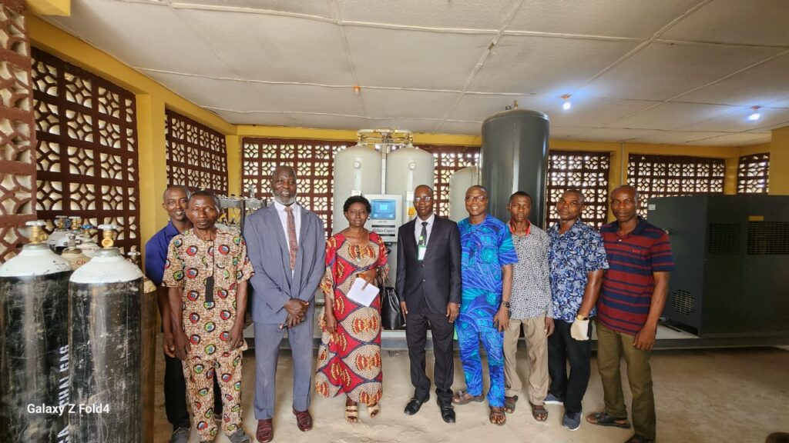

The MD and HCS with representatives of Federal Ministry of Health at the commissioning of the hospital's new oxygen plant
Tuesday, November 5, 2023
The Medical Director expresses satisfaction, optimistic about adequate supply to meet hospital patients’ daily consumption. Stakeholders applaud his unrelenting efforts in tackling protracted water, electricity, internal roads and oxygen challenges in the Centre….